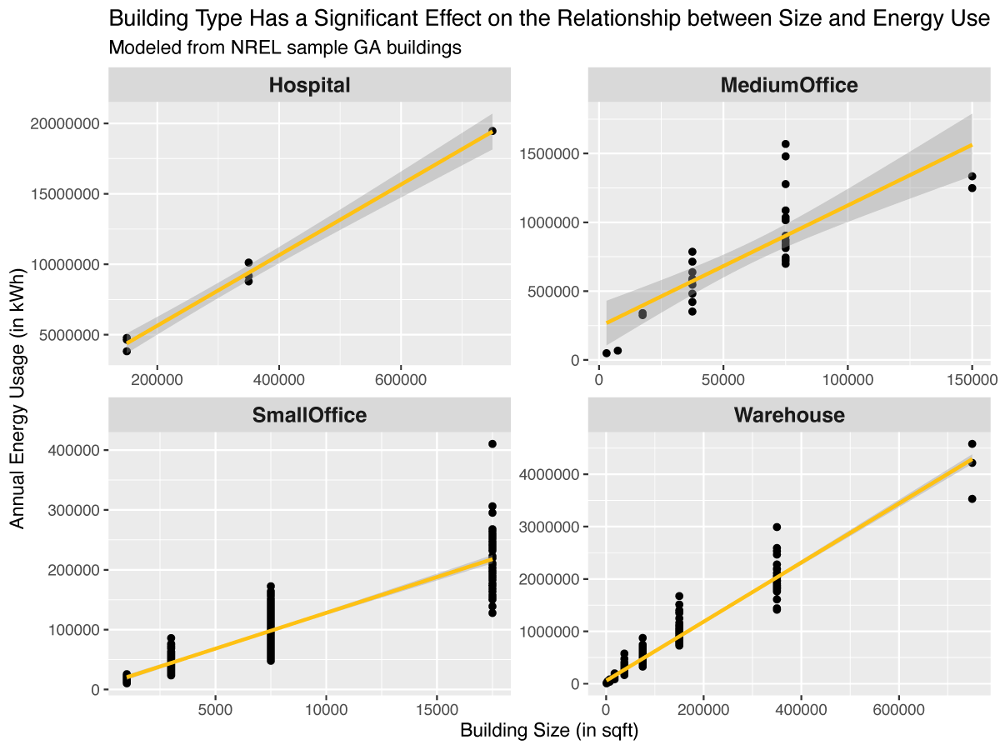

By Ethan Drake
It is important to take care of the patient, to be followed by the patient, but it will happen at such a time that there is a lot of work and pain. For to come to the smallest detail, no one should practice any kind of work unless he derives some benefit from it.

Do not be angry with the pain in the reprimand in the pleasure he wants to be a hair from the pain in the hope that there is no breeding. Unless they are blinded by lust, they do not come forth; they are in fault who abandon their duties and soften their hearts, that is, their labors.
Here's a link!